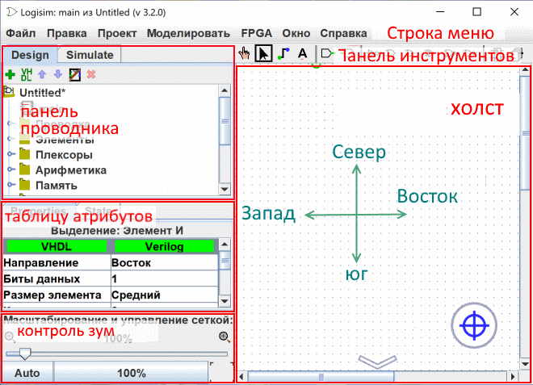

Холст
Холст (рабочее поле) — это основная графическая область программы, на которой вы размещаете компоненты, соединяете их проводниками и редактируете внешний вид подсхем для последующего моделирования.

Рабочее поле холста содержит несколько элементов управления навигацией и отображением:
-
Полосы прокрутки: служат для перемещения области просмотра по чертежу. Управлять прокруткой можно как с помощью ползунков, так и горячими клавишами или мышью:
- Вертикальная прокрутка: вращение колеса мыши или клавиши Вверх / Вниз;
- Горизонтальная прокрутка: вращение колеса мыши при зажатой клавише Alt (или Cmd на macOS), либо клавиши Влево / Вправо;
- Быстрый переход в самый верх или в самый низ холста: клавиши Page Up и Page Down соответственно.
-
Индикаторы выхода за границы экрана: если габариты схемы превышают текущую видимую область, по краям холста появляются специальные полупрозрачные стрелки. Они указывают направления, в которых чертёж продолжается за пределами экрана.

-
Кнопка центрирования (
 ): мгновенно выравнивает схему строго по центру рабочей поверхности.
): мгновенно выравнивает схему строго по центру рабочей поверхности.
-
Управление масштабом:
- Кнопка 100% — быстро возвращает масштаб отображения к исходному соотношению 1:1;
- Кнопка Auto — автоматически подбирает оптимальный масштаб так, чтобы весь чертёж полностью помещался в видимой области окна.
-
Кнопка управления сеткой (
 ): расположена в нижнем углу холста и позволяет переключать видимость координатной сетки позиционирования. Вне зависимости от видимости точек, привязка компонентов к сетке при перемещении всегда остаётся активной.
): расположена в нижнем углу холста и позволяет переключать видимость координатной сетки позиционирования. Вне зависимости от видимости точек, привязка компонентов к сетке при перемещении всегда остаётся активной.
Далее: Строка меню.